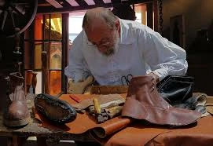
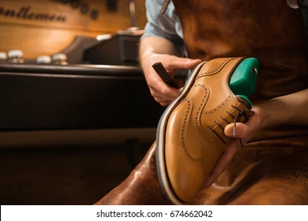
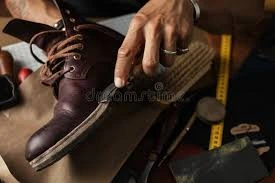
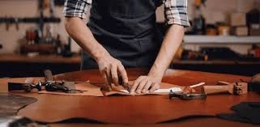
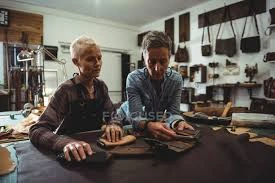

Legado de familía: más de 50 Años de Tradición y Cuero

Genaro Perez, el Fundador

El Proceso Artesanal

La Familia Gómez
En Calzado Roma, la historia se entrelaza con el aroma inconfundible del cuero. Fundada hace más de medio siglo, nacimos como un pequeño taller impulsado por una visión clara: ofrecer calzado de la más alta calidad, fabricado íntegramente en cuero y con el alma de la tradición familiar.
"Nuestra promesa es simple: cada par de zapatos es una pieza de arte, construida para durar y ofrecer una comodidad que solo el cuero genuino puede brindar."

Selección de Pieles

Clientes y Familiares
Nuestra Filosofía: Artesanía y Durabilidad
Mantenemos un riguroso proceso de fabricación artesanal. Seleccionamos las mejores pieles y empleamos técnicas transmitidas de generación en generación. Nuestro compromiso no es solo con la moda, sino con la durabilidad. Creemos que un zapato debe ser una inversión que mejora con el tiempo.
De la Familia, Para tu Familia
Hoy, la segunda y tercera generación de la familia Gómez dirigen Calzado Roma, combinando la sabiduría de nuestros fundadores con las tendencias modernas de diseño. Mantenemos vivos los valores de honestidad, respeto al material y pasión por el detalle en cada puntada.
Te invitamos a formar parte de nuestra historia y a experimentar la diferencia de un calzado hecho con el corazón y con más de 50 años de experiencia que nos respaldan.
Inicio